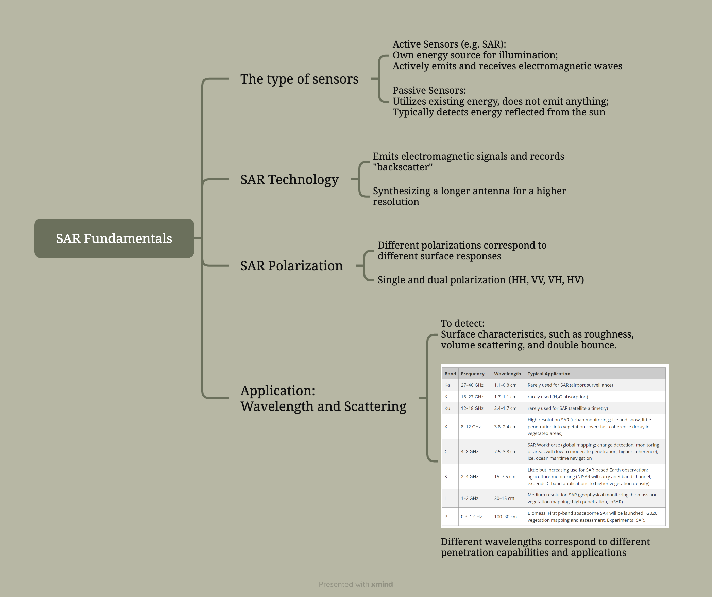
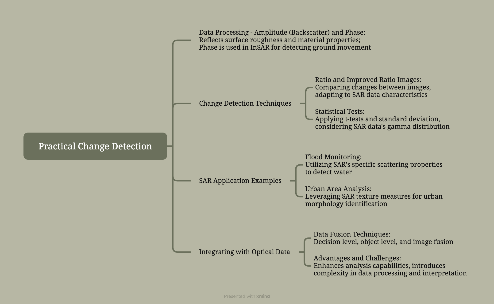

9 Week 9 - Synthetic Aperture Radar (SAR)
9.1 9.1 Summary
Synthetic Aperture Radar (SAR) is an active remote sensing technology that uses sensors to emit electromagnetic energy and record the energy reflected from the Earth. Unlike traditional optical remote sensing, SAR data more closely represent surface characteristics like structure and moisture. Due to the impracticality of long antennas in space, SAR achieves higher spatial resolution by synthesizing data from multiple shorter antenna acquisitions.
The summary of this week’s lesson on SAR will be divided into two parts, SAR Fundamentals and Practical Change Detection, and I’ve created detailed mind maps to summarise each of these parts:
- The summary of SAR Fundamentals:

The mind map of the summary for SAR Fundamentals
- The summary of Practical Change Detection:

The mind map of the summary for Practical Change Detection
9.2 9.2 Application
SAR technology in remotely sensing has various applications, including earth surface monitoring, environmental and earth system observation, 2D/3D surface mapping, and security-related applications (Sun et al., 2017). SAR technology offers high-resolution data capable of operating under various environmental conditions, but it also encounters challenges such as complex data processing and adaptability to specific applications (Sun et al., 2017).
He et al. (2022) show the application of SAR data in rapid flood mapping and agricultural impact assessment, providing a valuable tool for understanding the extent of flood damage, particularly in agricultural lands. They use near-real-time inundation extents from the RAPID system combined with CORINE Land Cover data to analyze the impact of the 2021 Western Europe flood on agricultural lands (He et al., 2022). They identify approximately 1920 km² of flooded area, with 64% being agricultural land, highlighting the significant impact on the region’s agricultural productivity (He et al., 2022). The use of SAR data allows for detailed and rapid assessment of flood impact, crucial for effective response and management. However, He et al. (2022) highlight limitations such as reliance on satellite-based precipitation data, which may underestimate precipitation in complex terrains, and the resolution limitations in capturing flood extents along small rivers.
Najoui et al. (2022) use 3644 Synthetic Aperture Radar (SAR) images from the ESA Envisat mission, covering 2002 to 2012, to detect and analyze the spatial distribution of 18,063 oil slicks in the Gulf of Guinea. These slicks included both anthropogenic oil spills from platforms and ships, as well as natural oil seeps, highlighting the extensive oil pollution in this region. The research demonstrates the use of SAR imagery in identifying oil spills and seeps over a vast marine area, contributing significantly to environmental monitoring and pollution assessment in the Gulf of Guinea. The use of SAR provides an efficient means for widespread oil pollution detection across the Gulf of Guinea, leveraging long-term image archives for historical analysis (Najoui et al., 2022). However, challenges include differentiation between anthropogenic and natural oil occurrences, and the complex processing required for SAR data interpretation (Najoui et al., 2022).
9.3 9.3 Reflection
SAR is a concept that I heard a lot in my undergraduate studies, but I wasn’t really familiar with its applications, especially the newest ones in the last few years. Therefore, completing this week’s course material and reading some of its most recent material filled in the gaps in my knowledge and skills in this area.
I am more interested in SAR than temperature, which is why I chose this section to appear in my learning diary rather than temperature. In this week’s lecture I was very interested in what the teacher said about the application of remotely sensed technology, SAR, to the detection of houses destroyed in war. I thought that was really cool and a meaningful thing to do because it would be very helpful for post-disaster or post-war reconstruction work. Perhaps for government workers in geography-related professions, SAR might be useful for detecting changes in land cover due to its rapid detection characteristics.
This is the last section of this module, and it ends here. Overall, through this module, I have learnt and consolidated the basic knowledge of remotely sensing through lecture and practical, and I have gained a better understanding of some recent remotely sensing applications through reading literatures in recent years. All these will make me more confident in my future work. I am very grateful to the teachers and teaching assistants for their efforts to make me gain a lot!
9.4 9.4 Reference list
He, K., Yang, Q., Shen, X., and Anagnostou, E. N. (2022) Brief communication: Western Europe flood in 2021 - mapping agriculture flood exposure from synthetic aperture radar (SAR). Natural hazards and earth system sciences. [Online] 22 (9), 2921–2927. DOI: 10.5194/nhess-22-2921-2022.
Najoui, Z., Amoussou, N., Riazanoff, S., Aurel, G., and Frappart, F. (2022) Oil slicks in the Gulf of Guinea - 10 years of Envisat Advanced Synthetic Aperture Radar observations. Earth system science data. [Online] 14 (10), 4569–4588. DOI: 10.5194/essd-14-4569-2022.
Sun, H., Shimada, M. and Xu, F. (2017) Recent Advances in Synthetic Aperture Radar Remote Sensing-Systems, Data Processing, and Applications. IEEE geoscience and remote sensing letters. [Online] 14 (11), 2013–2016. DOI: 10.1109/LGRS.2017.2747602.